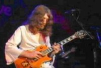
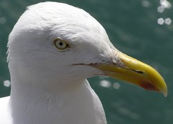

Tuesday, October the 26th, 2004
back to: title, date or indexes
The Hooting Yard Educational Outreach Hub announces a brand new correspondence course in Bird Recognition Skills, and not before time. As a taster, we are posting Module One on the site. Note that participants who successfully complete the entire course will be presented with an embossed certificate which gives full accreditation for entry to our upcoming courses on Advanced Bird Recognition Skills and Locust And Killer Bee Recognition Skills.
Module One : The Beak
A surefire method of deciding whether the animal you are looking at is a bird is to check whether it has a beak. If it has, then nine times out of ten it will be a bird. The beak—otherwise known as the bill—is the only device a bird has for consuming food. Birds have no teeth so they must swallow their food whole. A bird's beak can vary in size and shape depending on the nature of their diet. Some birds such as falcons have evolved to have a cutting-type beak which allows them to tear through flesh with violent and blood-crazed savagery, whereas the hummingbird has a probe-like beak which allows it to drink the nectar from certain flowers, such as primroses, buttercups and elecampine, although you would be advised to check the accuracy of those examples in a botanical dictionary such as An Alphabetical Guide To What Every Infant Should Know About The Majesty Of Nature by Dobson.
The beak is composed of an upper jaw called the maxilla, and a lower jaw called a mandible. From this the student can infer that all birds have two jaws. Remember that. Bird beaks are useful in other ways, for example woodcutters use theirs to cut wood, and parrots have sharp swivelled beaks to tear fruit, although their ripping and tearing is not quite as maniacal as those falcons mentioned earlier. Small mammals like hamsters and guinea pigs are quite safe from the average parrot, which is more likely to become ravenously ferocious in the presence of a grapefruit or a fig. Flamingos have long beaks to pull out fish from the water and ducks have flat beaks that allow them to retain all the fish and plants while draining out the water.
Generally speaking, if it hasn't got a beak, it is unlikely to be a bird. Try not to confuse a beak with a beaker, which is a drinks container like a mug or a tumbler, often but not always made of plastic, or with the Beaker People, which refers to an archaeological culture present in prehistoric Europe, defined by a pottery style—a beaker with a distinctive bell-shaped profile—that many archaeologists believe spread across the western part of the continent during the third millennium BC. If you have been paying attention you should be able to differentiate between those long-dead people and present-day birds.
In closing, remember that although they can fly, locusts do not have beaks, therefore they are not birds.
Sample questions:
1. Complete the following sentence: That carbon-based living organism over there perched on a tree branch has a beak, so it must be a) a weasel, b) a big magnetic robot, c) a bird.
2. Imagine you are living in the third millennium BC and you are holding a bell-shaped piece of pottery. Are you a) a member of the Beaker people, or b) a cassowary?
3. Look at the two pictures below. Which one is a herring gull with a very sharp beak designed to attack you?

Picture A, left, and Picture B, right. One of these is a herring gull.
Hooting Yard on the Air, April the 20th, 2005 : “Bird Recognition Skills” (starts around 00:15)
Hooting Yard on the Air, August the 10th, 2005 : “Impending Juxtaposition of Blubber and Tallow” (starts around 22:28)